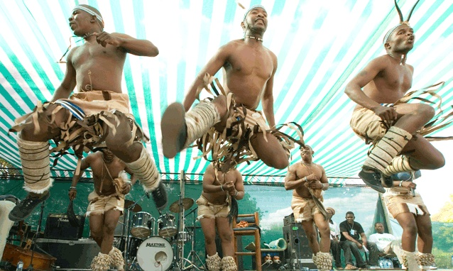
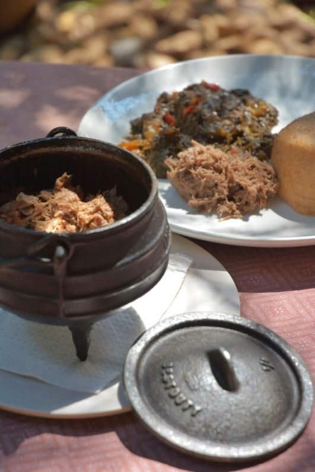

Rich Heritage of Botswana
Traditions, cuisine, and lifestyle of the Batswana people
Traditions & Ceremonies
The Batswana are known for Botho – a spirit of community and respect. Traditional dances like Setapa and Phathisi celebrate harvests and rites of passage. Kgotla (village assemblies) remain central to decision-making. During weddings and festivals, vibrant attire and cattle-based rituals highlight deep cultural roots.
Artifacts, basketry, and hand-woven crafts reflect centuries-old skills passed through generations.

Traditional Cuisine
Botswana's food is hearty and earthy. Sadza/Pap (maize porridge) accompanies seswaa (slow-cooked beef or goat), morogo (wild spinach), and dikgobe (bean and maize stew). Mopane worms – a protein-rich delicacy – are fried or dried. Don't miss vetkoek filled with minced meat.
Join a communal meal for an authentic taste of Botswana's warm hospitality.

Lifestyle & Craftsmanship
Modern and traditional blend seamlessly. In rural areas, thatched rondavels coexist with urban life. Basket weaving using ilala palm is a celebrated art — each pattern tells a story. Livestock, especially cattle, signify wealth and social standing. Music, storytelling, and oral poetry preserve history. Visitors are welcomed with genuine warmth and a slower pace of life that celebrates nature.